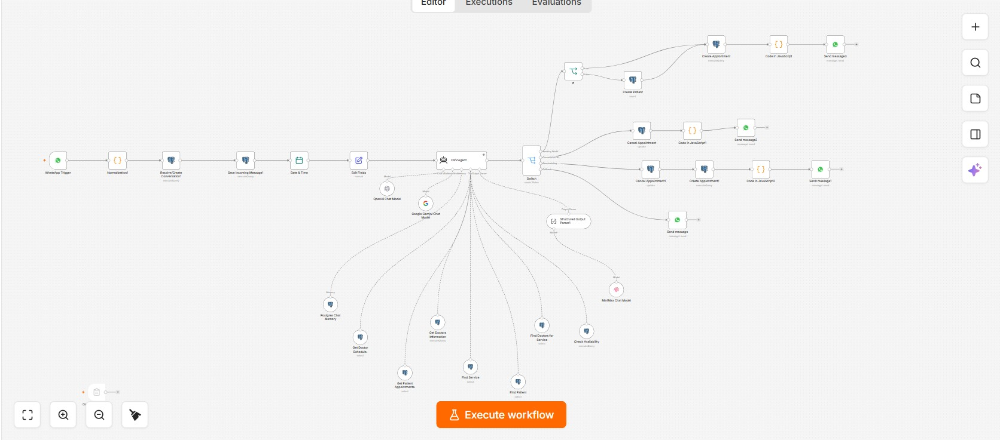

Clinic Customer Support & Appointment Management
An AI-powered dental clinic agent that answers patient questions, works with clinic and doctor knowledge through RAG, manages appointments over WhatsApp, sends reminders, and hands conversations to reception when human support is needed.
01Overview
The system acts as a customer-support and appointment-management agent for a dental clinic. Clinic and doctor information is provided through a RAG knowledge layer, including doctors' names, emails, education and other relevant profile information. Patients communicate with the agent through WhatsApp, while PostgreSQL/Supabase stores conversation and operational data.
The agent can answer questions, find relevant doctor/service information, create appointments, reschedule appointments, cancel appointments and send appointment reminders. When the conversation requires a receptionist, the agent performs a human handoff while preserving the conversation context.
02Business problem
Appointment management and customer support were handled manually. Patients needed to contact the clinic to ask questions and manage appointments, while staff also had to deal with forgotten appointments and missed visits.
The goal was to automate the repetitive communication and scheduling work while keeping a clear path to a human receptionist whenever the AI should no longer handle the conversation.
03Architecture
04Workflow

05AI components
- RAG knowledge layer — provides the agent with clinic and doctor information such as names, emails, education and profile details.
- GPT-5 — primary conversational model used by the clinic agent.
- Gemini fallback — full fallback path so the agent can continue operating if the primary model becomes unavailable.
- Tool calling — the agent can use operational tools for doctor/service lookup, availability and appointment actions instead of treating scheduling as plain text.
- Structured output — keeps agent decisions and downstream workflow handling predictable.
06Integrations
- WhatsApp Business API — patient conversations, confirmations and reminders.
- n8n — workflow orchestration and automation logic.
- PostgreSQL — conversation and operational data storage.
- Supabase — database infrastructure around the PostgreSQL layer.
- RAG knowledge source — doctor and clinic information used by the agent.
- OpenAI GPT-5 + Google Gemini — primary model and fallback model.
07Technical challenges
- Medical intake: each doctor needs access to the patient's relevant medical history before treatment, so the workflow includes a patient-data/form layer rather than treating appointment booking as the only data requirement.
- Safety-sensitive information: patient history can affect what a dentist can safely consider, so the system must keep patient information organized and available to the clinical team rather than relying on conversational memory alone.
- Human handoff: the agent needs to recognize when the patient should speak to reception and transfer the conversation without losing context.
- Appointment state: booking, rescheduling and cancellation require consistent database state so the conversation and appointment records do not drift apart.
- Model availability: the workflow uses a Gemini fallback path when GPT-5 is unavailable.
08Reliability engineering
- Validation: normalize incoming messages and validate the data required before operational actions.
- Persistence: save incoming messages and conversation context so the agent has continuity across interactions.
- Fallback: Gemini provides a second model path if the primary GPT-5 path fails.
- Human escalation: conversations that require staff involvement are handed to reception instead of forcing the AI to continue.
- Appointment reminders: scheduled reminders are sent before appointments to reduce forgotten visits.
09Business impact
The documented impact is workflow automation: repetitive booking/support communication is handled automatically, reminders are sent before appointments, and human support remains available through escalation.
10Lessons learned
An AI agent becomes much more useful when it is connected to real operational tools and persistent data. For a clinic, conversational ability alone is not enough: the system needs structured clinic knowledge, appointment state, patient information, model fallback and a reliable human-handoff path.
11Future improvements
- Add a dedicated patient portal for reviewing and updating intake information.
- Add automated post-appointment follow-ups and satisfaction collection.
- Add more granular receptionist routing by doctor, service or request type.
- Add appointment confirmation/response tracking for reminder messages.
- Add richer observability dashboards for model usage, handoffs, failed actions and appointment operations.